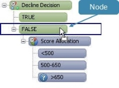
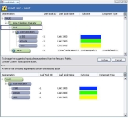
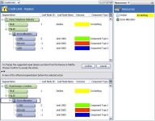
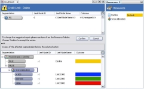
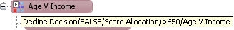

Working with Tree Splits in Index Table Trees
Tree splits or segmentation rules can be inserted into existing trees by dragging one of the available segmentation objects from the Resources window (or a draft split from the Palette) onto one of the nodes of another tree split. These splits can also be inserted by adding a by reference or embedded split. When a user inserts a new path into the tree, the tree editor changes to the Insert editor mode to enable the user to confirm the changes that are going to be made and to reassign any down-stream splits and outcomes.
The system will attempt to repair the tree by reattaching the orphaned down-stream dependencies and provide the user with a view of these changes in the top half of the editor. These changes will not be applied to the tree design, until the user confirms them within the Insert editor.
| For example, if a class set is attached to one of the nodes of boolean expression A, and boolean expression B is inserted, the system will re-attach the class set to the first node of boolean expression B. |
To insert a tree split
- With the Tree editor open, click on the Resources window or Palette that holds the segmentation rule that is to be inserted into the tree.
- Drag and drop the segmentation rule onto the node where you wish the tree split to be inserted.

- The system will convert the tree editor to its Insert Mode and alter the Resources window to only display the relevant down-stream segmentation rule and outcomes. Using the following as the example, only the Score Allocation class set would be displayed in the Resources window, because this is the only segmentation rule attached to the original split.

The system will illustrate in the bottom half of the editor what the tree looked like before the split was inserted, whilst the Insert editor (top half) will illustrate what the tree will look like using the down-stream matches suggested by the system. - Click on the Confirm button if you wish the changes to be applied to the tree.
- Click on the Cancel button to return to the Tree editor with the tree in its original state.
- To reassign the split to a different node to the one suggested by the system, whilst in the Insert editor, right click on the node where the split has been assigned and click Clear.
| Selecting Clear from any split header will clear all the leaf node attachments in that split. Conversely dropping an attachment onto a split header will add this attachment to all the leaf nodes in the split. |
- Drag and drop the segmentation rule onto the node required.
- Or just drag and drop the segmentation rule onto the leaf node name to replace the existing one.
- Repeat steps 6 to 8 as necessary.
- Click on the Confirm button to update the tree with these changes.
| Once the editor is in Insert Mode the Resources window will only display the down-stream segmentation rule(s) that are already in use at this point in the tree. |
The tree will be updated with the changes you have made and return to the tree editor where you can now continue editing the tree.
The Open split functionality enables the user to access the editor for the segmentation component that has been applied to the tree without having to exit the Tree editor.
| Selecting Open Split for a referenced component will open the editor outside the Tree editor in an additional tab, selecting open split from an embedded component will open the editor inside the tree. |
To open a split
- With the Tree editor open right click on a split header and select Open Split.
The editor for the segmentation component you have selected will be opened.
The Copy split functionality enables tree splits and any leaf node names and outcomes that have been assigned to them to be copied from a tree and pasted onto:
- leaf nodes and split headers within the same tree
- leaf nodes and split headers within another tree within the same solution
Copy Split can be accessed from any split header of a tree, however where it is pasted and the options that are available will affect what the tree editor pastes. When a split is copied and pasted between trees the user is given two options:
- Paste Split - will paste the split, but no outcomes will be created. If you are pasting within the same tree, the existing outcome assignments will be maintained
- Paste and Outcomes - will paste the split, create new outcomes and assign them in the tree
Copy and paste in the same tree
To copy a tree split and paste it onto a node in the same tree
- With the Tree editor open, right click on the split header that you wish to copy and select Copy Split.
- Right click onto a leaf node or split header and select Paste Split.
If the leaf node you are pasting onto or the leaf nodes for the split header you are pasting onto have no outcomes assigned, the copied split will be pasted directly into the tree. - If you choose to paste the split onto a node that already has an outcome or further segmentation assigned to it, you will enter the ‘Add’ or ‘Insert’ repair mode where you can decide how to repair the tree or whether you want to reassign the orphaned outcome or branch with its original outcomes assigned.
- You need to use the Insert a tree split to complete the paste.
- If you choose to paste the split onto a split header, where the split has outcomes or further segmentation assigned to the leaf nodes, you will enter the ‘Replace’ repair mode where you can decide if you want to reassign the orphaned outcomes or branches with their original outcomes assigned.
- You will need to use Replace a tree split to complete the paste.
- Repeat steps 1 to 6 as necessary.
The tree will be updated with the changes you have made and return to the Tree editor where you can now continue editing the tree.
Copy and paste in a different tree
To copy a tree split and use paste split
- With the tree editor open, right click on the split header that you wish to copy and select Copy Split.
- Within the Explorer window, right click on the component tree you wish to be paste the copied split into and select Open.
The component tree editor will open. - Right click on a leaf node or split header and select Paste Split.
If the leaf node you are pasting onto or the leaf nodes for the split header you are pasting onto has no outcomes assigned, the copied split will be pasted directly into the tree. - If you choose to paste the split onto a node that already has an outcome or further segmentation assigned to it, you will enter the ‘Add’ or ‘Insert’ repair mode where you can decide how to repair the tree or whether you want to reassign the orphaned outcome or branch with its original outcomes assigned.
- You need to use the Insert a tree split to complete the paste.
- If you choose to paste the split onto a split header, where the split has outcomes or further segmentation assigned to the leaf nodes, you will enter the ‘Replace’ repair mode where you can decide if you want to reassign the orphaned outcomes or branches with their original outcomes assigned.
- You will need to use Replace a tree split to complete the paste.
- Repeat steps 1 to 7 as necessary.
- In the Outcomes area, click on the outcome you wish to assign to the leaf nodes that do not have an Outcome assigned.
The Assign outcome button on the tool bar will automatically become activated.
on the tool bar will automatically become activated. - In the Tree editor click on the outcome of the leaf node that you wish to assign the outcome.
- Repeat as necessary to assign an outcome to all of the unassigned leaf nodes.

{kind=link}
{kind=link}
{kind=link}
{kind=link}
The tree will be updated with the changes you have made and return to the Tree editor where you can now continue editing the tree.
To copy a tree split and use paste split and outcomes
- With the tree editor open, right click on the split header that you wish to copy and select Copy Split.
- Within the Explorer window, right click on the component tree you wish to be paste the copied split into and select Open.
The component tree editor will open.
- Right click on a leaf node or split header and select Paste Split and Outcomes.
If the leaf node you are pasting onto or the leaf nodes for the split header you are pasting onto has no outcomes assigned, the copied split and any assigned outcomes will be pasted directly into the tree. If the outcomes already exist in the Outcomes Table, they will be reused, if they do not then new outcomes will be created. - If you choose to paste the split onto a node that already has an outcome or further segmentation assigned to it, you will enter the ‘Add’ or ‘Insert’ repair mode. In this mode the pasted split will be added to the node with its copied assignments, the system will not attempt to repair the tree for you, but you will have access to reassign any orphaned outcome or branch with its original outcomes assigned.
- You need to use the Insert a tree split to complete the paste.
- If you choose to paste the split onto a split header, where the split has outcomes or further segmentation assigned to the leaf nodes, you will enter the ‘Replace’ repair mode. In this mode the pasted split will be added to the tree with its copied assignments, the system will not attempt to repair the tree for you, but you will have access to reassign any orphaned outcomes or branches with their original outcomes assigned.
- You will need to use Replace a tree split to complete the paste.
- Click on the Confirm button if you wish the changes to be applied to the tree.
- Click on the Cancel button to stop the paste.
The tree will be updated with the changes you have made and return to the Tree editor where you can now continue editing.
Tree splits or segmentation rules can be replaced within trees by dragging one of the available segmentation objects from the Resources window (or a draft split from the Palette) onto one of the split headers in the tree. These splits can also be replaced by adding a by reference or embedded split. When a user attempts to replace a split, the tree editor changes to the Replace editor mode to enable the user to confirm the changes that are going to be made and to reassign any down-stream splits and outcomes.
{kind=link}
The system will attempt to repair the tree by reattaching the orphaned down-stream dependencies and provide the user with a view of these changes in the top half of the editor. These changes will not be applied to the tree design, until the user confirms them within the editor.
| For example, if a class set is attached to the false node of a boolean expression A, and boolean expression B replaces boolean expression A, the system will re-attach the class set to the false node of boolean expression B. |
To replace a tree split
- With the Tree editor open, click on the Resources window or Palette that holds the segmentation rule that is to be used to replace the tree split.
- Drag and drop the segmentation rule onto the split header where you wish the tree split to be replaced.
- The system will convert the Tree editor to its Replace Mode and alter the Resources window to only display the relevant down-stream segmentation rules, outcome(s) and leaf node name(s).
The leaf node names and outcomes are displayed separately in the Resources window, though they are dragged and dropped into the editor as a pair. Using the following as the example, the Score Allocation class set and the Decline leaf node name and Decline outcome would be displayed in the Resources window, as it is these two objects that were attached to the boolean expression that is being replaced.

The system will illustrate in the bottom half of the editor what the tree looked like before the split was replaced, whilst the Replace editor (top half) will illustrate what the tree will look like using the down-stream matches suggested by the system. - Click on the Confirm button if you wish the changes to be applied to the tree.
- Click on the Cancel button to return to the Tree editor with the tree in its original state.
- To reassign the split to a different node to the one suggested by the system, in the Replace editor, right click on the node where the split has been assigned and click Clear.
{kind=link}
{kind=link}
| Selecting Clear from any split header will clear all the leaf node attachments in that split. Conversely dropping an attachment onto a split header will add this attachment to all the leaf nodes in the split. |
- Drag and drop the segmentation rule and or outcome and leaf node name onto the leaf node required.
- Or just drag and drop the segmentation rule and or outcome to replace the existing one.
- Repeat steps 6 to 8 as necessary.
- Click on the Confirm button to update the tree with these changes.
| Once the editor is in Replace Mode the Resources window will only display the down-stream segmentation rule(s), outcome(s) and leaf node name(s) that are already in use at this point in the tree |
The tree will be updated with the changes you have made and return to the Tree editor where you can now continue editing the tree.
Tree splits or segmentation rules can be deleted from trees. When a user attempts to delete a split, the Tree editor changes to the appropriate Delete editor mode for the component tree the user is editing so that the user can confirm the changes that are going to be made and to reassign any down-stream splits and outcomes.
The system will provide the user with a view of the tree once the delete has occurred. This deletion will not be applied to the tree design until the user has confirmed it.
{kind=link}
To delete a tree split
- With the Tree editor open, right click on the split that you wish to delete and select Delete Split.
- The system will display a confirmation dialog. Click on the OK button to confirm the delete.
- The system will convert the segmentation editor to its Delete Mode and alter the Resources window to only display the relevant down-stream segmentation rules, outcome(s) and leaf node name(s).
The leaf node names and outcomes are displayed separately in the Resources window, though they are dragged and dropped into the editor as a pair. Using the following as the example, if the Decline Decision split is deleted the Decline leaf node name and Decline outcome would be displayed in the Resources window, as it is these two objects that were attached to the boolean expression before it was deleted.

The system will illustrate in the bottom half of the editor what the tree looked like before the split was deleted, whilst the Delete editor (top half) will illustrate what the tree will look like when this split is deleted. - Click on the Confirm button if you wish the changes to be applied to the tree.
- Click on the Cancel button to return to the editor with the tree in its original state.
{kind=link}
The tree will be updated with the changes you have made and return to the Tree editor where you can now continue editing the tree.
Bookmarks can be added to split headers in the tree. When the contents of the tree are displayed in the Navigator, all the bookmarks are displayed separately. Clicking on a bookmark in the Navigator window will open the tree in the Tree editor at that point in the tree, giving the user quick access to a specific split header in the tree.
To add a bookmark to a split header
- In the Tree editor, locate the split header that you wish to bookmark.

The system will display the full path of the split headers as you move your cursor over the tree. - Either click on the Add bookmark icon on the tool bar and click on the split header that you wish to bookmark, or right click on the split header and select Add Bookmark.
The system will open the Bookmark dialog. - Type a description for the bookmark.
- Click on the OK button.
{kind=link}
{kind=link}
The split header will now include a bookmark icon and the Navigator window will be updated to display the bookmark.
Bookmarks can be hidden from view in the tree. Hiding a bookmark will not affect its functionality. The user will still be able to use the bookmark to quickly navigate to a split header in the tree by double clicking on it in the Navigator window.
| Hide All Bookmarks and Show All Bookmarks will only be available if you have bookmarks assigned to your tree. |
To show or hide all bookmarks
- With the Tree editor open, right click on any split header and select Show All Bookmarks.
All the bookmarks will be displayed. - With the Tree editor open, right click on any split header and select Hide All Bookmarks.
All the bookmarks that were visible in the tree editor will be hidden from view.
You can continue editing your tree.
When the contents of the tree are displayed in the Navigator, all the bookmarks that have been assigned to split headers in the tree are displayed separately. Clicking on a bookmark in the Navigator window will open the tree in the tree editor at that point in the tree, giving the user quick access to a specific split header in the tree and collapse the rest of the tree.
To open a tree using a bookmark
- With your tree already open, in the Navigator window, double click on the bookmark that you wish to access.
The system will move the tree so that the - split header is now visible in your editor. The split header will be selected.
You can continue editing your tree.